开篇：大宗商品跌了五年，现在是战略底部吗？
2011年以来，全球的大宗商品价格经历了5年的下跌，特别是2014年之后，大宗商品经历了数次暴跌的过程。我们认为，大宗商品价格的暴跌极大地改变了原有的世界秩序，主导国美国和追赶国中国都在商品价格暴跌中获益，而资源国却走向崩溃的边缘，商品价格已经成为当今世界利益分配的核心问题。在经历了5年的下跌之后，大宗商品是否已经见底？这会是一个什么级别的底部？这个问题不仅仅是短期大宗商品价格波动的问题，更是一个大宗商品投资的战略问题。我们一直认为，大宗商品投资是人生资产中最战略的品种，主要因其投资的长周期和暴利性。如果大宗商品是一个重要的战略底部，那么在实体经济中不断地买进矿产，就是为未来的暴利而投资，所以，现在研究大宗商品底部的级别至关重要。
2016年初的核心问题： 大宗商品从2011年跌到2016年（5年），油跌了70%，铜跌了52%。这不仅是短期价格问题——如果现在是大宗商品的战略底部，那就不是在期货市场抄底的问题，而是去实体经济中收购矿产、为十年后的暴利做准备。 所以判断底部级别，是战略决策。
大宗商品的底部级别问题，本质上就是商品周期的问题，以我们对世界经济周期嵌套的理解，大宗商品一定存在不同级别的周期及嵌套模式。康德拉季耶夫周期是决定世界商品价格波动的根本驱动力，这一点我们在前面已经做过详细的阐述。但是除了在每次康波的衰退期出现为期10年的商品牛市，商品自身在康波的复苏、繁荣和萧条期也一定有周期性波动。这一点显然是我们在商品周期中需要进一步关注的问题。这里有几个关键的问题需要解释。第一，大宗商品的产能周期显然不会像康波50～60年那么久，作为周期性行业，大宗商品的产能周期一定对商品的价格具有十分重要的影响，而大宗商品的产能周期与康波周期是如何嵌套的，这是商品周期研究的最核心问题。第二，大宗商品作为周期性行业，其价格波动一定与固定资产投资周期相关，而从商品价格波动来看，我们是否可以分离出其与投资周期的关系，这对商品周期研究有一定的意义。第三，任何周期性行业的价格波动都是由库存周期推动的，库存周期在商品周期中是如何表现的，这是捕捉大宗商品短期机会的基本逻辑。
问题的本质是周期嵌套。 康波（50-60年）是大方向，但商品还有自己的节奏。周金涛提出三个待解决的关键问题：① 产能周期 与康波如何嵌套？（核心）② 商品价格波动能否与固定资产投资周期 分离出来？③ 库存周期 如何在商品周期中表现？（这是抓短期机会的工具）
带着上述构想，本章艰难地寻找长序列数据，进行分析和研究，最终构建了一套大宗商品价格四周期嵌套模型。现在看来，虽然商品的价格走势根本上由康波决定，但是在一个大趋势内部，大宗商品的价格波动存在显著的多级别嵌套模式，而这种模式的规律性亦非常明显。根据我们的研究结果，一个康波周期大宗商品价格波动的内部嵌套着两个大宗商品的产能周期，每个产能周期25～30年。而在产能周期运动的同时，大宗商品存在18～20年的超级波动周期，超级周期的大趋势服从康波和产能周期，但也存在自我的价格波动特征。一个超级周期内部存在三个显著的小级别周期波动，我们称其为商品的涛动周期，因为这一周期类似于我们理解的太阳黑子周期中的厄尔尼诺现象。
四周期嵌套模型的骨架： 一个康波里套两个产能周期（各25-30年）→每个产能周期里套超级周期（18-20年）→每个超级周期里套三个涛动周期（类似厄尔尼诺的"小气候"）。这四层一层套一层，规律非常明显。
根据这一模型的相互印证，我们对大宗商品价格的底部级别进行了准确定位。（1）从康波周期来看，显然，2015年商品熊市仍在持续。（2）从产能周期来看，2015年处于15～20年产能周期下降期的中段，这一定不是产能周期的最低点，但是产能周期中的价格将在下降6～8年后到达低点，随后进入价格的横盘震荡。截至2015年，价格已经下降5年，如果以过去的规律推测，价格低点在2018年至2019年之间。（3）从超级周期来看，本次超级周期始于2001年，高点出现在2010年，而根据规律推导，本次超级周期的最终低点将出现在2019年，这个年份与产能周期中的价格下降低点是重合的。同时，在到达最终低点之前的两年来，商品将出现双底形态，也就是2016年将出现年度级别的超跌反弹。（4）以超级周期内部涛动周期的规律来看，本次超级周期仅经历两个涛动周期，在2019年之前一定还会出现一次涛动周期，时间应该在2016年至2019年。
四层互相印证，结论非常清晰：
① 康波层面： 2015年熊市还在继续，2018-2019是衰退→萧条的转换点=重要低点。
② 产能周期层面（25-30年）： 2015年处于下降中段，低点在2018-2019年。
③ 超级周期层面（18-20年）： 2001年启动→2010年见顶→最终低点2019年。2016年会先出现年度级别的超跌反弹（双底的第一脚）。
④ 涛动周期层面： 2016-2019年还有一次涛动周期，价格先反弹再探底。
总结：2016年中级反弹→2019年前再次探底→2019年后横盘→2030年附近新产能周期开启。 现在（2016年初）是战略布局窗口。
一、康波框架下的大宗商品牛熊——10年牛、20年熊
关于在四周期嵌套模型下对大宗商品周期的研究，我们从2006年起就一直在进行，2006年我们发表了《色即是空》，用康德拉季耶夫周期及其嵌套理论解释当时的大宗商品牛市。2008年我们发表了《走向成熟》，指出康波冲击最剧烈的阶段已经过去，中国经济将出现V形反转。随后发表了《资源约束、信用膨胀与美元币值——长波衰退中的增长与通胀》，对康波第一次进行了系统性论述，解释了康波中的商品价格现象。2009年之后，我们一直把精力集中在对房地产周期和库存周期的研究上。解释了中国库存周期的发生机制问题，并对中国库存周期的多个高低点进行了预测和检验。2011年是第五次康波衰退的一个重要关口，本次康波商品牛市的第二个头部在2011年第二季度出现。2014年下半年之后，我们判断伴随着美元指数的上行，大宗商品的暴跌，世界经济可能进入康波衰退二次冲击阶段，世界经济将出现动荡加剧的景象。
这个框架不是拍脑袋想出来的，而是十年研究的积累。 从2006年《色即是空》解释商品牛市→2008年预判V形反转→之后系统研究房地产和库存周期→2011年确认商品牛市第二个头→2014年预判美元走强+商品暴跌+二次冲击。每一步都踩在点上。
康德拉季耶夫周期理论是世界商品价格的根本决定力量，这一点我们在前面已经详细论述。目前受到比较广泛认可的康波划分方法是荷兰经济学家雅各布·范杜因的划分。他的划分列出了有资本主义世界以来前四次康波的四阶段划分，以及标志性的技术创新。我们可以看出，第五次康波自1982年起进入回升阶段，1991年之后进入繁荣阶段，而根据对康波的理解，我们定位主导国美国繁荣的高点为康波繁荣的顶点，即2000年或2004年。2004年之后，康波进入衰退阶段，而第五次康波的标志性技术创新为信息技术。
康波是商品价格的根本决定力量。 按范杜因的权威划分：第五次康波1982年回升→1991年繁荣→2000/2004年繁荣顶点→2004年后进入衰退。标志性技术：信息技术（互联网革命）。2002年之后=繁荣与衰退的交接，正好对应本轮商品大牛市的起点。
对于康波而言，大宗商品价格的剧烈波动是其有别于其他周期的重要特征，而这种价格的剧烈波动主要集中于从衰退到萧条的阶段。罗斯托的观察描述了这种康波价格波动的基本特征，即价格的波动在一个很短的时间内急剧变大，最终对经济造成冲击，这实际上就是康波衰退的冲击，而这种冲击一般集中于康波衰退期，但在第四次康波中，冲击贯穿了整个衰退和萧条期。
康波最剧烈的价格波动集中在衰退→萧条转换期。 罗斯托发现：价格在很短时间内急剧变化、冲击经济——这就是"康波衰退冲击"。第四次康波中这种冲击贯穿衰退+萧条全程。第五次大概率也是类似的节奏。
实际上，大宗商品价格本身也会随着经济中周期和短周期而波动，这是一个比较简单的供需机制问题。而康波对价格研究的意义在于，价格机制会在康波繁荣到达顶点之前发生突然变化，即所谓的大宗商品10年牛市，而10年牛市之后，又会出现一个价格剧烈波动的熊市，这个熊市一般贯穿康波的衰退和萧条阶段，主要下跌阶段可能维持十几年（见图11-1）。在大宗商品牛市和熊市阶段中，增长与通胀表现出迥异于之前的特征，可见，过去10年价格的波动特征并不适用于未来10年。因此，必须在大周期格局下理解短期的商品价格波动，这才是研究康波中价格波动的根本意义。
核心规律：康波繁荣顶点前→10年商品大牛市→随后20年商品熊市贯穿衰退和萧条。 牛市和熊市里，增长与通胀的特征完全不同——过去十年的经验对未来十年完全不适用。 所以必须在康波大周期框架下看短期波动，而不是线性外推。
▲图11-1 康波中的商品牛熊：每次康波繁荣顶点前→10年牛市→20年熊市贯穿衰退和萧条
第五次康波的大宗商品牛市始于2001年至2002年，而美国GDP增长的最高峰出现在2000年，按照康波的划分，2000年或2002年之后就是第五次康波的繁荣与衰退的交接阶段。2002年之后，大宗商品经历了一个长达10年的牛市，其中2008年可以被视为大宗商品牛市的第一个头部，2011年被视为大宗商品牛市的第二个头部，从康波大宗商品牛市的形态上看，我们可以确认本次康波大宗商品牛市的终结。自2011年之后，大宗商品一直在熊市中运行，至2015年底已有5年的时间，这就是对当前大宗商品价格运行的基本定位。
本轮定位： 2002-2011=10年商品大牛市，2008年第一个头，2011年第二个头（双头顶），然后转入熊市。到2015年底已经跌了5年。确认：牛市已结束，熊市进行中。
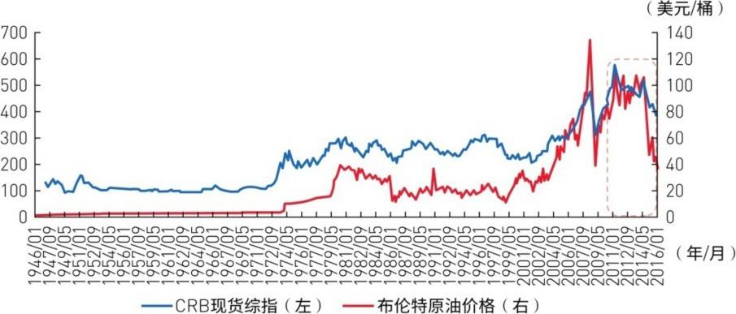
▲图11-2 本轮熊市中CRB从580跌到375（-35%），能源和工业金属最惨
在2002—2011年长达10年的大宗商品牛市中，CRB现货综指累计涨幅达到171.7%，能源、金属和农产品价格均创下历史新高。2011年商品价格见顶后，整个大宗商品市场开启了漫长的熊市，至2015年底CRB现货综指从高点的579.68点跌至374.7点，累计跌幅达到35.36%。分品类来看，食品价格下跌33.93%，工业原材料价格下跌35.49%，畜禽价格下跌40.02%，纺织品价格下跌26.33%。相较于其他商品，能源和工业金属价格的波动更剧烈，布伦特原油和WTI原油期货收盘价5年内分别累计下跌70.39%和67.49%，LME基本金属价格指数相较于最高点下跌50.87%，其中铜价下跌52.5%，铝价下跌42.36%，铅价下跌37.48%，锌价下跌36.43%，镍价下跌68.14%，锡价下跌56.13%（见图11-2、图11-3）。
数据说话，惨烈程度一目了然： 牛市10年CRB涨了172%。熊市5年CRB跌了35%。分品种：油跌70%（最惨），镍跌68%，锡跌56%，铜跌52% ——金属和能源跌幅远超农产品，波动性更高。这组数据是后面一切分析的基础。
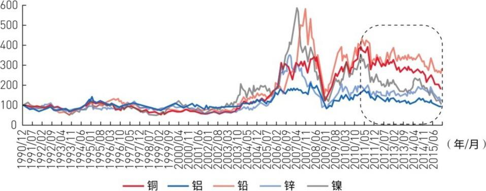
▲图11-3 镍跌68%、锡跌56%、铜跌52%——金属惨状一览
经过5年的下跌之后，商品是否会达到一个低点？而这个低点是什么级别的低点？这是大宗商品投资中的核心问题。以商品周期与康波周期的对应关系来看，我们似乎可以得到一些启示。2002年或2004年之后，康波已经确认了从繁荣向衰退的转换，而经历了2008年的康波一次冲击之后，2015年之后康波应进入二次冲击阶段并向萧条转换，这个转换点大概率出现在2018年至2019年附近。有一个结论是可以肯定的，即衰退和萧条的连接点一定是康波中大宗商品价格的重要低点，这一点为前四次康波的价格形态所证明。
关键结论：衰退和萧条的交接点=商品价格长期低点。 这个规律在前四次康波中无一例外。第五次康波的衰退→萧条转换点大概率在2018-2019年 ，所以2016年还不是终极大底，但离底部区域不远了。
如果我们以美国的CPI来看，其CPI和PPI长期来看是一致的，所以我们以康波划分美国的CPI趋势，得到的结论很有意义。（1）康波的繁荣期百分之百是价格的平稳期；（2）康波的回升期三次中有两次价格平稳；（3）康波的衰退期价格百分之百剧烈波动；（4）康波的萧条期百分之百都是冲高回落。这个研究的意义在于，我们正处在衰退即将结束、向第五次康波萧条过渡的阶段，而2015年全球都处于货币大量释放后的通缩阶段，康波的规律向我们预示当前处于价格低点附近的概率非常高，这为我们的价格低点研究提供了佐证。
用美国CPI历史数据验证： 康波四阶段的价格表现规律极为确定——繁荣期=价格平稳，衰退期=剧烈波动，萧条期=冲高回落。2015年全球处于货币大放水后的通缩阶段 ，与康波衰退末期的特征完全吻合。所以当前大概率在价格低点附近。
前三次康波的价格形态表现出很明显的古典周期的波动形态，而第四次康波表现出了增长型周期的波动形态，这与世界经济的历史趋势相吻合。第四次康波中大宗商品的价格波动与前三次出现了不同的形态，没有出现通缩，而是出现滞胀。可以肯定的是，第五次康波衰退向萧条转换的位置（大概率是2016—2020年），应是一个商品价格的长期低点，第五次康波衰退以来并没有出现类似第四次康波的滞胀问题，而是表现出明显的通缩特征，这种纷繁复杂的现象需要我们进一步研究。
第四次康波特殊（滞胀而不是通缩），第五次回归通缩。 1970年代是石油危机引发的滞胀，商品价格高位剧烈波动。但本次康波衰退没有出现滞胀，而是通缩——这和前三次古典周期的规律一致，意味着商品长期低点正在形成。 2016-2020年=商品长期低点区域。
1966年之后，美国结束了高增长低通胀的局面，而在1966年至1982年始终处于滞胀状态，这就是康波的衰退与萧条期。1982年之后，美国进入了高增长低通胀的局面，直到2007年。但2007年后，全球的本质是通缩，这一点与经典的康波是一致的，但这并不等于说，本次康波将在通缩的局面中结束。
历史线索： 1966-1982=康波衰退萧条=滞胀。1982-2007=康波回升繁荣=高增长低通胀。2007年后=通缩回归，符合经典康波规律。但通缩不会永远持续——康波萧条后期可能出现新的通胀力量。
我一直认为，对大部分工业化人口而言，人生的财富由康波决定，而在大宗商品、黄金、房地产、艺术品和股票五类资产中，大宗商品的价格波动最具长周期意义，而且是最暴利的资产。所以，对大宗商品底部的研究具有战略意义，如果我们能够确认大宗商品进入了以5年或10年计算的底部位置，那就不仅仅是一个商品期货的交易问题，而更多是一个如何在实体经济中进行战略性商品资产投资的问题，这当然需要进一步研究。
"人生发财靠康波"的注脚： 五类资产中，大宗商品最暴利。上行周期碾压一切，下行周期亏得最惨。研究底部=找到暴利的起点。如果能确认5-10年级别的底部，就不是炒期货的问题，而是在实体经济中买矿山的战略机会。
美林选用经济合作与发展组织"产出缺口"、消费者物价指数以及美国超过30年（1973年4月至2004年7月）的资产回报率数据，对经济周期进行了划分，表11-1描述了经济周期的不同阶段各类资产收益率排序。从统计数据看，虽然大宗商品的长期平均回报落后于股票，但其价格波动呈现鲜明的周期性和"暴力性"，其收益率在不同的时期呈现出两个极端，这说明在大宗商品的下行周期中，其收益率远低于其他资产；而在上行周期中，大宗商品的表现又远远超过其他资产。
美林时钟的数据验证： 大宗商品长期平均回报不如股票，但波动极端——下行周期收益率垫底，上行周期收益率碾压一切。 这就是"暴利性"的统计学支撑：不在长期平均，而在周期择时。
图11-4描述了投资标准普尔500指数股票、大宗商品和美元现金42年内的持有期收益率，横轴表示持有资产至今的年数。可以看出，在长期范围内，优质成分股的总体收益率远远超过大宗商品，且价格波动周期较短，而对于大宗商品投资，其收益率呈显著的长周期波动特性。大宗商品资产收益的长周期性和"暴力性"赋予了其与传统金融资产不同的属性，这告诉我们，在大类资产配置中，我们应该更注重大宗商品的战略投资价值。
图11-4揭示核心差异： 股票长期持有收益率稳定走高（复利效应），大宗商品则是周期性大幅波动——持有时间长不一定赚钱，必须在正确的周期位置持有。大宗商品不适合"买入持有"，只适合"周期择时"。
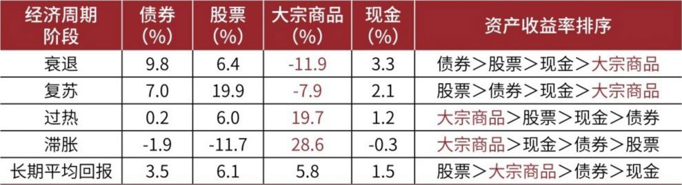
▲图11-4 大宗商品/股票/美元42年持有收益率：商品呈长周期暴利特征
三、产能周期——25-30年的底层发动机
关于大宗商品价格的解释，罗斯托认为，初级产品部门（含能源、原材料和食品）生产能力的不足和生产能力的过剩交替过程较长，原因在于，这些产品的需求不能平稳发展。（1）在获利能力出现后和为开发它进行投资决策之间存在长时间的延迟，在开辟新的生产能力上存在长时间的酝酿。（2）在完成投资和最有效的利用之间存在延迟。事实上，这就是所谓的产能周期问题。罗斯托也认为，决定康波中大宗商品价格波动的根本是产能周期，产能周期不能解释50～60年的长期价格波动，但是产能周期显然是大宗商品周期的入手点。
罗斯托的洞见： 矿业产能从决策→建设→投产→达产，每一步都有长时滞。看到价格涨了再决定开矿→3年后矿建好了→价格可能已经跌了。这种"永恒的错配"就是产能周期的根源。产能周期不能解释康波50-60年的全貌，但它是理解商品价格最核心的切入点。
由于产能的形成一般需要数年的时间，当期投入到产出存在明显的时滞效应，所以当期投入在未来某个时间才能转换成供给，这直接导致当期需求与当期供给的结构性错配。这种永恒的错配也引发了产能扩张和减少的波动，这是产能周期波动的核心逻辑。需要注意的是，价格与产能的关系是相互推动的，产能是价格的滞后指标。
产能周期的底层逻辑： 当期投资→几年后才形成供给，所以当期供给和当期需求永远错配 。价格涨→企业投资扩产→几年后供给暴增→价格跌→企业削减投资→几年后供给萎缩→价格涨……循环往复。注意：产能是价格的滞后指标 ——先有价格信号，后有产能变化。
衡量产能的指标基本围绕着固定资本的形成展开，我们在研究商品产能周期的过程中使用了美国经济分析局的数据，主要采用美国的产能指数同比、固定资产形成同比、固定资产投资同比、固定资产平均使用时间四个指标进行比较。我们选取了基本金属的上述指标，从对比情况来看，我们发现美国的基本金属产能指数主要与固定资产投资同比关联性更紧密（见图11-8、图11-9）。显然，固定资产投资同比是一个中周期的指标，它更多代表中周期的供需格局所导致的投资。而我们认认为，商品的产能周期一定是超越中周期范围的，后面的研究充分验证了这一点。而且我们确实找不到世界范围内的权威产能数据，美国的固定资产投资数据也只能代表美国的中周期需求，不代表世界的基本金属产能。
用什么指标衡量产能周期？ 四个候选指标：产能指数、固定资产形成、固定资产投资、固定资产平均使用时间。初步对比发现，固定资产投资同比与产能指数关联最紧密，但它本质是中周期指标（9-10年），不够长。 商品产能周期显然超越中周期范围。而且美国一国的数据不代表全球——需要更好的指标。
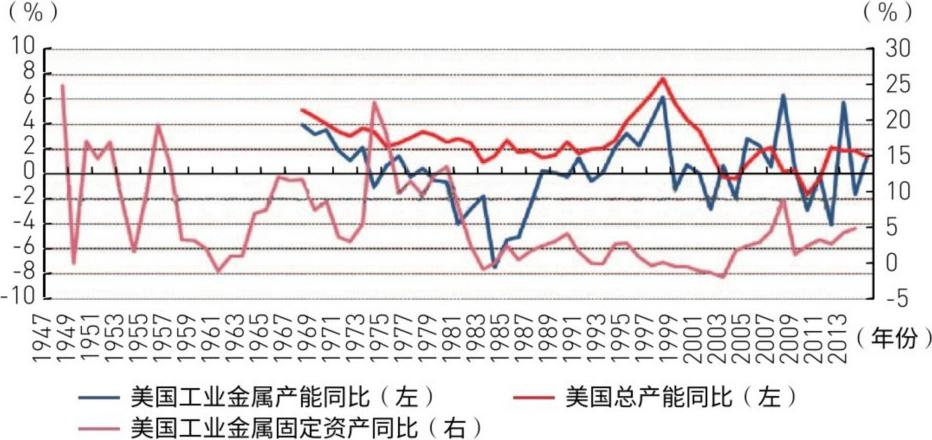
▲图11-8 美国工业金属产能、固定资产与总产能对比 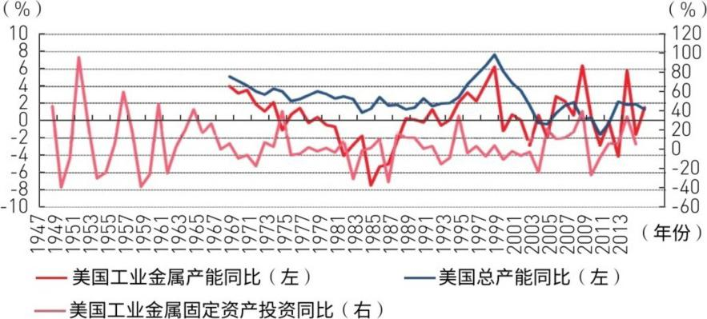
▲图11-9 美国工业金属产能、固定资产投资与总产能对比——固定资产投资同比与产能关联最紧
还有一种衡量商品产能周期的方法，就是用固定资产的平均使用时间衡量商品的产能周期。这个指标指的是美国经济分析局通过间接法测量净固定资产数据，即Fix（t）=Fix（t-1）+Gross Investment（t）-Depreciationor Consumption of fixed capital（t）。固定资产平均使用时间基于所有在产设备的加权平均使用时间，权重是每部分固定资产占总净固定资产的份额。固定资产平均使用时间的变化是由过去的投资和折旧的速率决定的，一项包含大量旧投资的固定资产的平均使用时间会较高。固定资产平均使用时间的上升阶段也是产能周期的下降期，也就是说，这个阶段固定资产投资是减少的。按照此逻辑可以推导出，这个阶段商品价格应该是下降的。相反，固定资产平均使用时间的下降阶段也是产能周期的上升期，这个阶段的固定资产投资是增加的，所以，对应此阶段的商品价格是上升的。
核心指标：固定资产平均使用时间。 逻辑链：设备越旧→说明过去投资少→产能萎缩→价格应该见底（反相关）。反过来：设备越新→说明过去投资多→产能扩张→价格应该见顶。这个指标用设备的"年龄结构"反映产能周期方向，比固定资产投资更"长视" ——旧设备比例高意味着多年的投资不足累积。
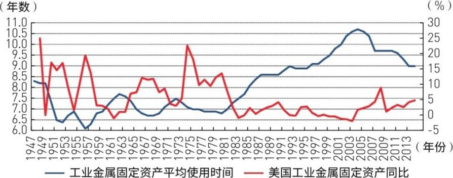
▲图11-10 固定资产平均使用时间与工业金属固定资产同比——二者反相关，20-30年尺度上互相印证 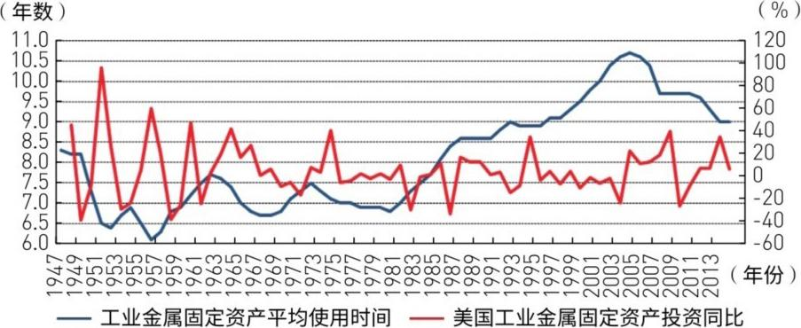
▲图11-11 固定资产平均使用时间与固定资产投资同比——反相关确认
关于固定资产平均使用时间指标，我们进一步做了行业比对（见图11-12）。从不同性质行业的该指标特征来看，该指标是可以反映一个行业的生命周期的。比如在美国，造纸、服装皮革等行业都表现出了很明显的产能周期下降特征，而这个特征显然是由这个行业进入生命周期的成熟或者衰退阶段造成的。但很多行业并非如此，大部分上游资源品行业，如基本金属、农业表现出强周期性，而没有明显的行业生命周期波动特征。所以，我们认为这个指标反映了上游资源品行业的周期趋势，可以用于界定上游资源品行业的周期性。实际上，固定资产平均使用时间可能代表的是一种产能上的时间结构，而这种固定资产的使用时间结构是代表全球的，不单单是美国的结构，所以我们可以认为，美国固定资产平均使用时间在一定程度上可以代表全球的产能周期。
为什么用美国数据能代表全球？ 跨行业对比发现（图11-12）：造纸、服装等下游行业是"生命周期"驱动（走向衰亡），但基本金属、农业等上游资源品是"周期波动"驱动（周而复始）。更重要的是，美国固定资产的"年龄结构"反映了全球产能的时间结构 ——因为全球矿业投资的节奏和美国是同步的（都跟着世界需求和价格走）。
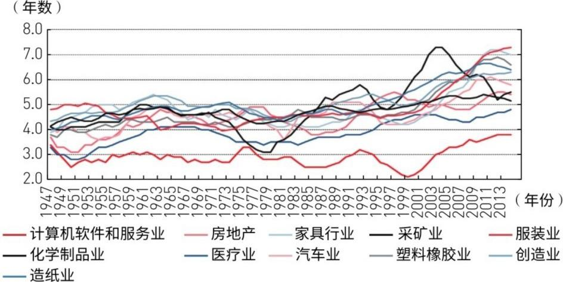
▲图11-12 各行业固定资产平均使用时间：上游资源品呈强周期性，下游呈生命周期特征
我们将金属价格与基本金属行业的固定资产平均使用时间进行了对比，发现了非常显著的反相关特征，也发现了明显的基本金属的产能周期（见图11-13、图11-14）。从数据可得，1947年之后，综合对大宗商品周期的理解，我们认为可以划分出两个大的周期。以固定资产平均使用时间为基准，第一周期从1956年开始回升，经历1962年和1972年两个头部之后，在1972年达到高点，这一上升期历时16年，随后下降期至1980年结束，历时8年，总的周期自1956年到1980年，历时24年。第二周期从1980年开始回升，一直上升至2004年，历时24年，而从2004年开始下降，2014年应该是一个新低位置，下降期历时10年，总的周期历时34年。而在这个过程中，商品价格也有对应的变化，见表11-3。问题在于，1956年至1972年的产能下降阶段出现了双头结构，似乎在划分上存在疑义。但我们在参考了石油的产能周期后，认为这样划分是合适的（见图11-15）。
价格与固定资产平均使用时间呈显著反相关——产能周期被证实。 1947年以来可以划出两个大周期：
第一周期：1956→1980，历时24年 （上升16年→下降8年）。在1956-1972年出现双头结构。
第二周期：1980→2014，历时34年 （上升24年→下降10年）。2004年见顶→2014年新低→下降进行中。
第一个周期的"双头"有争议，但参考石油周期（图11-15）后确认划分合理。
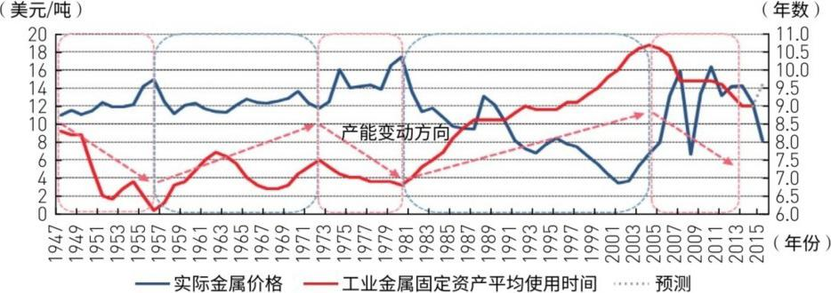
▲图11-13 产能周期与实际金属价格：显著反相关——产能上升期价格跌，产能下降期价格涨 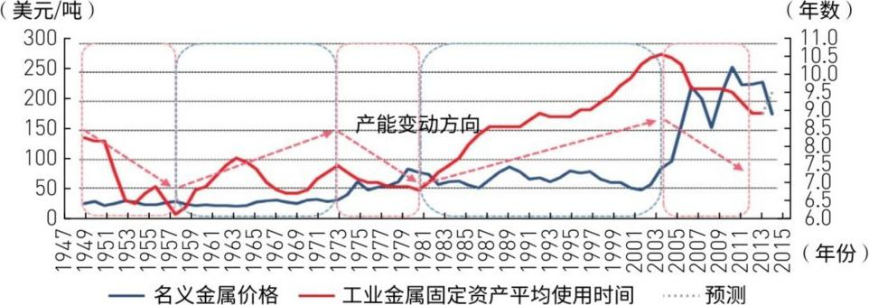
▲图11-14 产能周期与名义金属价格——反相关同样显著 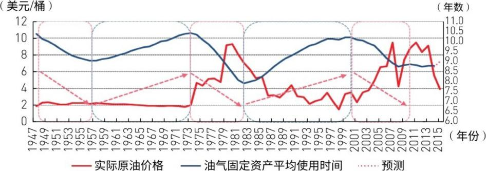
▲图11-15 油气产能周期——与金属周期互相印证，确认划分合理
按照上述两个产能周期分别为24年和34年的情况推测，一个康波的运行中大致存在两个产能周期（见图11-16），由于没有更长序列的数据，我们无法知道1956年之前的产能周期情形。但依据现有数据，我们可以推测上一个产能周期的启动点是在1945年附近。按照现在我们可以知道的，在2011年附近，产能周期大致应该会进入下降阶段。而以上两次的经验来看，这个下降阶段要经历16～24年，也就是说，下一个新的产能周期的启动点在2030年附近。我们原来推测2030年是第六次康波回升阶段的开始年。这样我们得到的产能周期的启动点序列是1945—1972—2002—2030年，间隔25～30年，这应该就是大宗商品的产能周期。
重大结论——产能周期启动序列：1945→1972→2002→2030，每25-30年一轮。 每个康波套两个产能周期。2011年产能周期见顶→下降期16-24年→下一个产能周期启动约在2030年 （恰好是第六次康波回升的起点）。也就是说：2011-2030年是漫长的产能下降+横盘期，2030年后才开启新的商品大牛市。
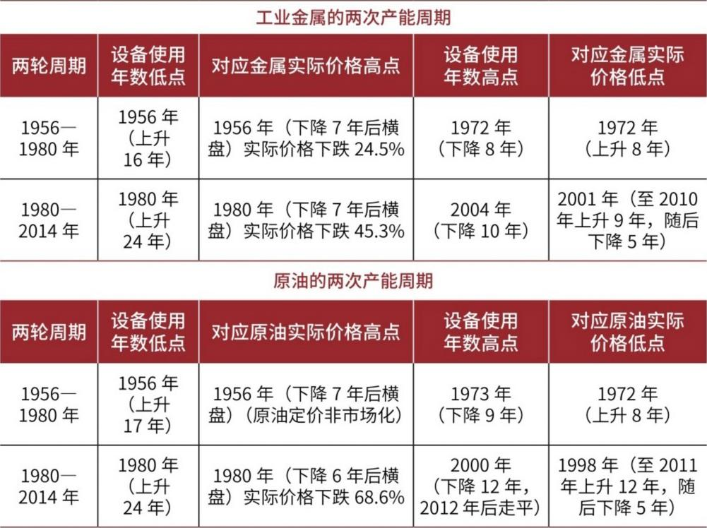
▲表11-3 两次产能周期统计：第一周期1956-1980（24年），第二周期1980-2014（34年） 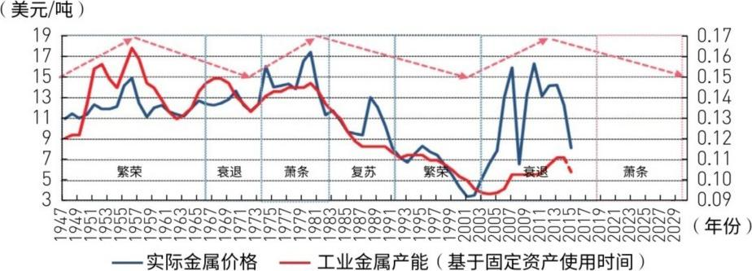
▲图11-16 产能周期在康波中的位置：每康波嵌套两个产能周期，启动序列1945-1972-2002-2030
我们注意到，大宗商品价格的波动在产能周期的高点位置前后非常剧烈，这实际上就是我们提出的，商品价格由供需边际变化决定。我们注意到，在产能周期最初向下的时候，价格都要经历一个为期7年的迅猛下跌阶段，随后放缓。我们理解，这个阶段应该是供给边际上升最快而需求边际下降最快的阶段，所以，这应该是价格最凌厉的下跌期。本次产能周期在2011年基本见顶之后，2011—2015年所经历的就是这样的阶段，特别突出的就是中国边际需求的下降速度最快，所以，这5年应该是商品产能周期熊市的主跌阶段。而当产能供给边际上升和产能需求边际下降已经进入放缓阶段时，价格将向底部靠近。
熊市节奏：先猛后缓。 产能周期见顶后，前7年是"供给暴增+需求暴跌"的双杀——价格主跌段，跌幅最猛。然后是放缓期，价格向底部靠拢。2011-2015年=主跌段（中国边际需求下降最快）。2016-2019年=放缓探底段。
我们使用固定资产平均使用时间的倒数来表示产能周期方向，这样可以更明显地感受产能周期的上升与下降，并且这种表达与价格的方向是一致的，见图11-17。
把固定资产平均使用时间取倒数→方向和价格一致（上升=产能扩张=价格上涨，下降=产能萎缩=价格下跌） ，看图更直观（图11-17）。
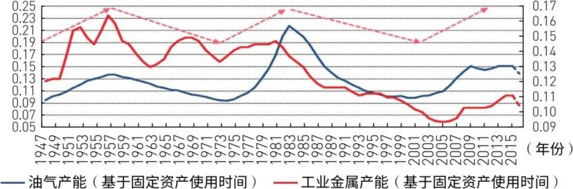
▲图11-17 取倒数后产能周期方向与价格方向一致，更直观
至于为什么大宗商品的产能周期是25～30年，以我们对价格和产能关系的理解，在价格低点，一定是需求引致了价格的上升，然后引致了产能的上升。所以，我们推测这种需求来自三个方面，一是主导国的经济繁荣，如1947年是第四次康波繁荣的启动，资本主义产生了20年的黄金发展期。二是追赶国的工业化，如2000年后中国的工业化，1955年后日本的工业化。三是货币体系变化或通胀因素。必须说明，这些解释都是无力的，当后面研究大宗商品的价格波动周期时，我们可能有更贴切的解释方法。
为什么产能周期长达25-30年？ 三个可能的驱动因素：① 主导国繁荣 （1947年第四次康波启动→20年黄金期）；② 追赶国工业化 （1955年日本、2000年中国——每次都催生一轮产能周期）；③ 货币体系变化 （如1971年布雷顿森林解体→通胀→商品涨价→产能投资）。周金涛坦率地说这些解释"都是无力的"，后面用超级周期来给出更好的解释。
目前来看，大宗商品周期及其价格确实与代表投资需求的产能周期不一致。从时间来看，美国的产能周期与中周期时长是一致的，都是9年左右，根源在于，中周期和产能周期本质上都是固定资产投资问题。但产能周期与中周期也存在明显的不同，从大的波动特征来看，产能周期显著存在超越10年以上的剧烈波动序列，但是大宗商品产能周期与总产能周期不同（见图11-18），大宗商品产能周期表现出更强的波动性与长序列，节奏上也不一致。但有一点值得注意，就是根据我们以前的研究《中国经济即弹触底》，美国产能周期的平均下行期为5年，而中国产能周期的下行期也是5年，从上述大宗商品产能周期的研究可以看出，大宗商品产能周期的重要下行波动也是5～7年，这一点具有一定的可比较意义。
大宗商品产能周期 vs 总产能周期 vs 中周期： 美国总产能周期约9年（和中周期一致），但大宗商品的产能周期长达25-30年，远超总产能周期（图11-18）。不过有意思的是：大宗商品产能周期的下行波动段大约是5-7年 ，这和普通产能周期的下行期（5年）居然差不多——说明大宗商品虽然是"长周期"，但下跌段并不比普通周期更慢，只是跌得更深、更猛。
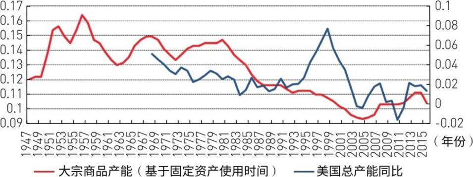
▲图11-18 大宗商品产能周期vs美国总产能周期：大宗商品波动性更强、周期更长
当然，用牛鞭效应可以解释为什么大宗商品的产能周期长于其他行业。牛鞭效应的基本思想是：当供应链上的各节点企业只根据来自其相邻的下级企业的需求信息进行生产或者供应决策时，需求信息的不真实性会沿着供应链逆流而上，产生逐级放大的现象。当信息到达最源头的供应商时，其所获得的需求信息和实际消费市场中的顾客需求信息发生了很大的偏差。由于这种需求放大效应的影响，供应方往往维持比需求方更高的库存水平或者生产准备计划。由于上游资源品处于供应链的最末端，其波动性最大，反应最慢，也最剧烈。
牛鞭效应——为什么上游最惨？ 想象一条供应链：消费者多买了一点手机→零售商多备货→品牌商多下单→代工厂多采购→矿商多开采。每一层都放大上一层的需求信号，传到最上游的矿商时，实际需求波动被放大了数倍 。所以上游资源品（石油、铜、铁）是经济周期中波动最大、反应最慢、周期最长 的环节。这就是为什么大宗商品的产能周期长达25-30年。
当然，还有一种可能，就是大宗商品的物理勘探和产能建设周期，根据我们对主要金属冶炼厂生产建设周期的调查，基本工业金属的投资—产出周期一般为3年，其中铝厂的投资周期只需1～1.5年。总体来看，工业金属的供给价格弹性并不是很差，因此可以认为产能建设周期并不是金属行业产能周期更迭的原因。总之，可以确认的是，以金属、能源为代表的大宗商品市场产能周期在2011—2012年达到顶峰，当前已经步入产能下降期。
排除一个常见误解：金属矿的建设周期只有3年，铝厂甚至只要1年多—— 靠物理建设时间解释不了25-30年的产能周期。所以产能周期不是由"建矿需要时间"决定的，而是由需求信息沿供应链的扭曲和放大（牛鞭效应） 决定的。结论不变：产能周期2011-2012年见顶，现在处于下降期。
根据上面对产能周期的划分，我们进行了商品价格趋势的可比性叠加研究，我们选取了上一个产能周期的启动点1972年作为价格起点。而本次产能周期综合金属和原油的走势，选取2001年为启动点，对价格趋势进行了叠加研究，得到图11-19、图11-20。应该说，叠加取得了良好的效果，无论从原油还是金属来看，目前的价格都已经到达了一个重要的低点附近，这个低点在上一轮产能周期中是1986年，随后无论是金属还是原油都出现了价格反弹。而这种比较的意义在后面的章节会有更好的解释和更可信的结论。
历史叠加——最直观的预测方法： 把上一轮产能周期（1972年启动）的价格走势和本轮（2001年启动）叠在一起比，走势惊人相似 （图11-19、11-20）。上一轮的低点出现在1986年（启动后14年），本轮对应2016年附近。1986年之后出现了反弹，所以2016年也大概率会出现反弹。
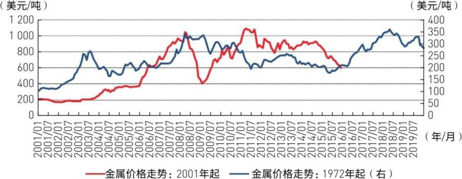
▲图11-19 原油价格走势历史叠加：2001年原点vs1972年原点——走势惊人相似，2016年=重要低点 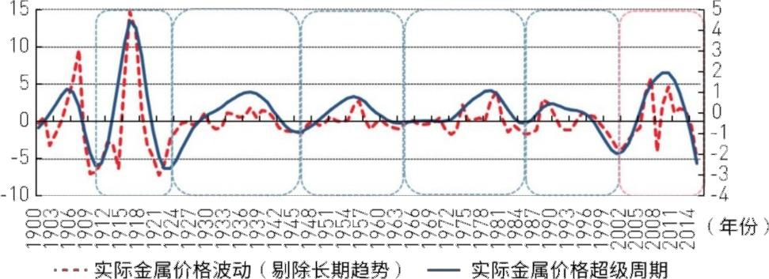
▲图11-20 金属价格走势历史叠加：同样惊人的相似
四、超级周期——滤去长期趋势后的18-20年波动
除了大宗商品的产能周期，大宗商品价格一定与中周期或者固定资产投资趋势的更短周期相关，我们以国外论文的称呼方式，称其为超级周期。接下来，我们采用BP滤波对商品价格数据分两步进行处理。第一步，得到商品实际价格运行的长期趋势（即Trend）；第二步，剔除商品价格长期趋势，得到实际价格与长期趋势的偏离，并对其再次采用滤波处理，得到基本金属价格运行的超级周期（即Super Cycle），图11-21中的两条线表示剔除长期趋势后的实际价格运行（Nontrend）、超级周期（Super Cycle）。
超级周期=用BP滤波把康波和产能周期的长期趋势剥掉，剩下的"净波动"就是超级周期。 分两步：①提取长期趋势（Trend）→②用实际价格减去趋势，得到"偏离"，再滤波一次→得到18-20年的超级周期。这是一种频域分析 方法：把不同频率的波动分离开来。
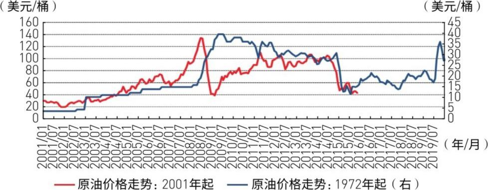
▲图11-21 基于BP滤波的金属超级周期：18-20年一轮，滤去长期趋势后的"净波动"
从结果来看，以金属价格为代表的商品的超级周期，即商品价格与长期趋势的偏离走势，大致存在一个平均18～20年的周期性波动。这种波动显然由一些经济中比产能周期更短的因素所致，目前来看，我们推测这与固定资产投资所导致的需求增加有关。实际上，虽然固定资产投资增加的可见因素是朱格拉中周期，但固定资产投资中长期趋势对国别来讲还是房地产周期。我们也将商品超级周期与房地产周期进行了对比，因为东西半球的房地产周期启动点差10年。对比的结果是，商品的超级周期在1960年之前更多跟随西半球的房地产周期波动，而在1960年之后，更倾向于东半球的房地产周期（见表11-4）。
超级周期跟着房地产周期走。 1960年以前跟西半球（美国/欧洲）的房地产周期，1960年以后跟东半球（日本/中国）的。这解释了为什么本次超级周期在2001年启动——中国的房地产大周期恰好在那时启动。 超级周期和房地产周期的深度绑定说明：大宗商品的"超级需求"本质上是城市化+工业化的衍生需求。
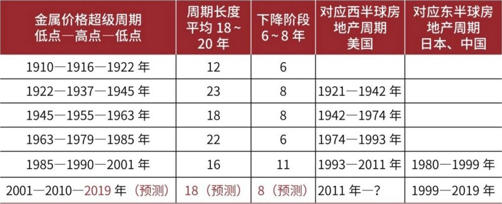
▲表11-4 1900年后金属超级周期与东西半球房地产周期的对应关系
经过产能周期与超级周期的定位后，我们可以对2011年开始的大宗商品熊市进行一个性质定位。显然，2011年的商品熊市超越了超级周期，更多是一个产能周期级别的熊市。而从更短的超级周期来看，每轮超级周期的下跌一般都是6～8年。所以，2011年熊市的形态基本上可以类比1956—1963年的熊市和1979—1986年的熊市。而我们把1956年和1979年的熊市进行了叠加，其走势具有惊人的相似性，所以，从技术走势上看，这是完全可以参考的。因此，我们对2011年开始的本轮熊市与1956年熊市和1979年熊市分别进行叠加。
精准定位本轮熊市的"历史参照系"： 2011年以来的熊市不是普通的超级周期下跌，而是产能周期级别的熊市 ——级别更高，杀伤力更大。可参照的历史时段：1956-1963年 和1979-1986年 。这两段熊市的走势惊人相似——把它们的图叠在一起，能够得到2016-2019年走势的参考模板。
当然还有一种比较方法值得参考，通过对比历史上的熊市周期我们还发现，在商品市场确认步入熊市之前会出现相隔3～4年的两个价格高点，如果以每轮熊市开启前的第一个高点作为原点进行叠加比对，我们得到图11-22至图11-27。
第二种叠加方法：以熊市前第一个高点为原点。 历史规律：商品大熊市前，会出现相隔3-4年的两个高点（双顶形态）。以第一个高点对齐，叠加不同轮次的熊市——图11-22到图11-27做了6种组合对比，互相验证。
这种对比的结果验证了我们的结论，本次熊市与1956年和1979年的熊市对比，无论从时间还是幅度来看，都已经具备了第一低点形成的条件。所以，商品的反弹应该是可以预期的，而商品价格终极低点的出现大约在第一低点的两三年之后，这也符合我们上面的预测值，商品价格的终极低点将出现在2018—2019年。但是在见最终低点之前，按上述技术形态，应该会出现一次中级反弹。按照我们前期报告的观点，这个中级反弹大概率在2016年发生。
6种叠加交叉验证，结论一致： 时间和幅度都已达到第一低点 的条件——2016年大概率出现一次中级反弹。但第一低点≠终极大底，终极低点在第一低点后2-3年（2018-2019年）。 形态上是一个双底结构 ：2016年第一脚→反弹→2018-2019年第二脚（终极大底）。
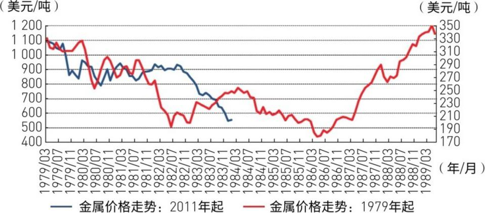
▲图11-22 金属熊市对比：2011年原点 vs 1979年原点——惊人相似 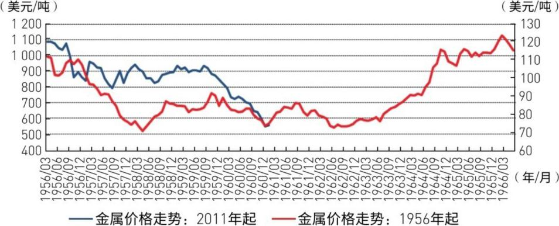
▲图11-23 金属熊市对比：2011年原点 vs 1956年原点——同样惊人相似 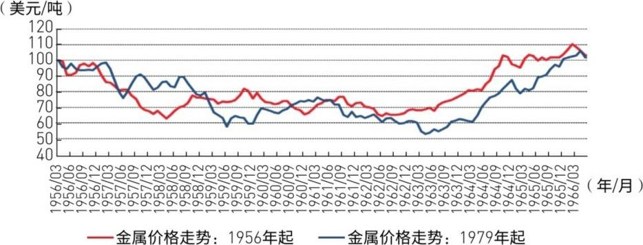
▲图11-24 金属熊市对比：1956年原点 vs 1979年原点——两段历史熊市自身也高度相似 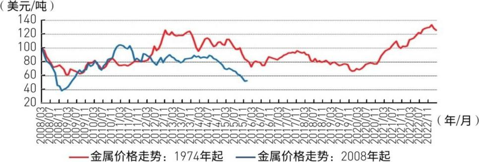
▲图11-25 第二种方法：以熊市前第一个高点（2008 vs 1974）对齐叠加 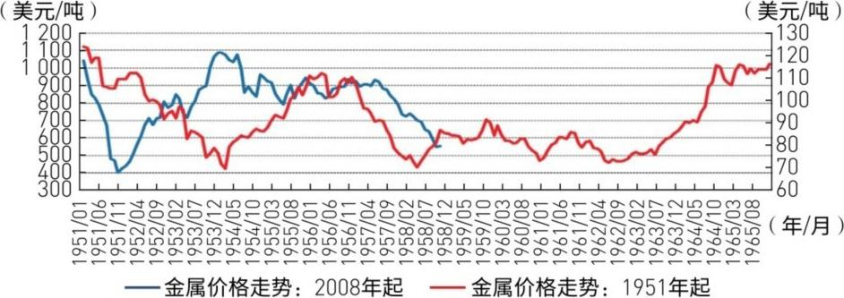
▲图11-26 第二种方法：以熊市前第一个高点（2008 vs 1951）对齐叠加 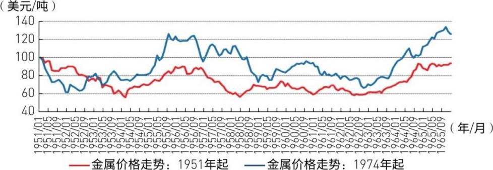
▲图11-27 第二种方法：以熊市前第一个高点（1951 vs 1974）对齐叠加